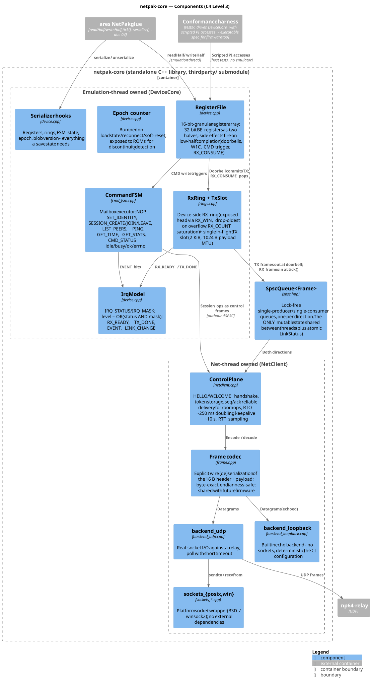
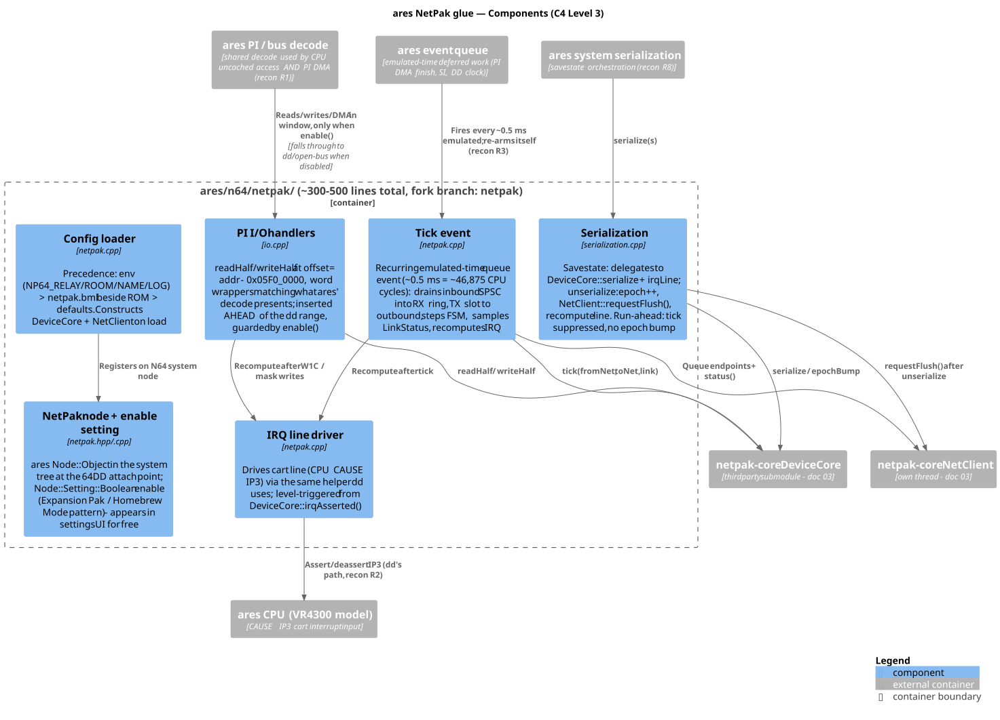
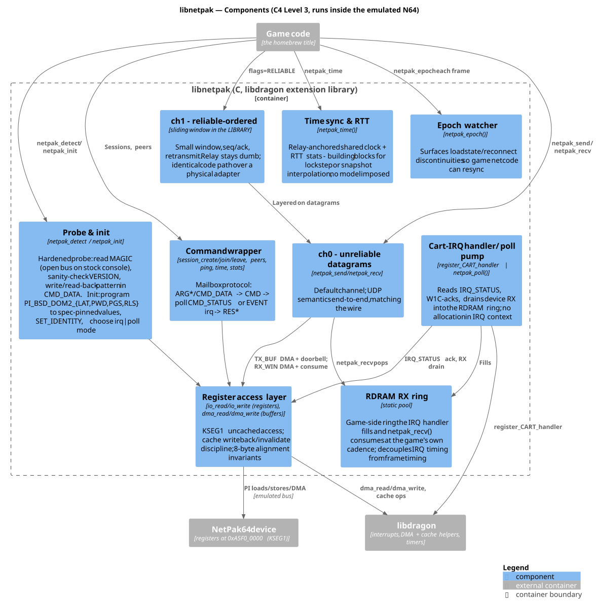
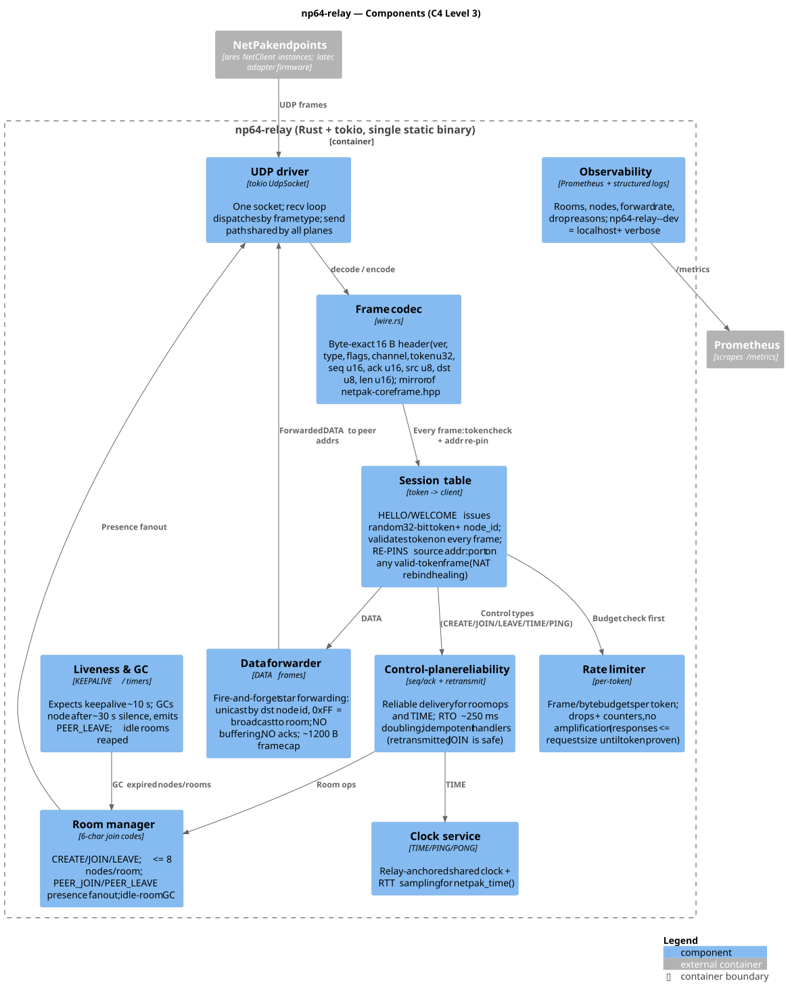

03 — Components (C4 Level 3)
Deep dive into the internal structure of each major subsystem. Four C4 L3 diagrams detail the components and their interactions.
netpak-core — The Standalone Device Library

Figure: Register file, FSM, rings, net client, backends, and conformance harness
netpak-core is the project's center of gravity: a standalone, dependency-light C++ library holding all real device logic, consumed as a thirdparty/ git submodule by the ares fork today and by adapter firmware and other emulators later. It has no threads of its own on the emulation side, no exceptions across the glue boundary, and no external dependencies (sockets wrapped internally).
The two halves and the seam between them
- DeviceCore — emulation-thread owned. Register file, command FSM, rings, IRQ model, epoch, serialization. No threads, no sockets, no clocks of its own — time only advances when the host calls
tick(). This half lifts into MCU firmware nearly verbatim. - NetClient — owns a
std::threadand a UDP socket. Handshake, keepalive, control-plane retransmission, token re-pin, RTT sampling. Touches only the two SPSC queues and an atomicLinkStatussnapshot.
Key components
- RegisterFile: 16-bit-granular storage (the PI bus is AD16). Reads elsewhere in the 64 KiB window return
0xFFFFper half. - CommandFSM: Mailbox executor for NOP, SET_IDENTITY, SESSION_CREATE/JOIN/LEAVE, LIST_PEERS, PING, GET_TIME, GET_STATS. Asynchronous: CMD write → busy → results after FSM processes the request.
- Rings: Single in-flight TX (doorbell commits), device-side RX ring (exposed head, drop-oldest on overflow). One DMA per packet in each direction.
- Control plane: HELLO/WELCOME handshake, seq/ack reliable delivery for room ops (RTO ≈ 250 ms doubling), keepalive (~10 s), RTT sampling.
- Backends:
backend_udp(real relay) andbackend_loopback(builtin echo, deterministic, no sockets — the CI config).
ares Glue — The Thin Adapter

Figure: Bus decode, tick event, IRQ line, serialization — ~300-500 lines total
The glue is deliberately the least interesting part of the system — four files, ~300–500 lines, every one replaceable per ares release. Its design is governed by the three constraints; this explains how each component honors them.
Key components
- Bus decode: Inserted ahead of dd range in the shared PI-space decode. When disabled, bit-identical fallthrough to upstream (constraint 1).
- Tick event: Every ~0.5 ms emulated time (~46,875 CPU cycles): drains inbound SPSC into RX ring, TX to outbound, steps FSM, samples LinkStatus, recomputes IRQ. Inbound packets become visible only at tick boundaries (determinism + savestate coherence).
- IRQ line:
irqLine = |(IRQ_STATUS & IRQ_MASK), recomputed on any change, driven onto CPU CAUSE IP3. No cross-thread race (emulation thread only). - Serialization: Savestate = blob version + DeviceCore state + irqLine. Relay session lives outside savestate. On unserialize: restore → epoch++ → requestFlush() → recompute line.
- Reset semantics: Soft reset clears registers/rings but NetClient survives (resync event, not disconnect). Hard power recreates NetClient (fresh handshake).
libnetpak — The ROM-Side Driver

Figure: Probe, register layer, IRQ handler/poll pump, channels, command wrappers
libnetpak is the ROM-side driver: a C library in the libdragon ecosystem that turns the raw register device into a small, non-blocking, game-loop-shaped API. Everything in it must run on real hardware unmodified — it uses nothing but PI accesses, the cart IRQ, and libdragon primitives.
Key API surface
- Probe & init: Hardened probe (MAGIC → VERSION → CMD_DATA write/read-back), program PI_BSD_DOM2 timings, choose IRQ or poll mode.
- Register access: KSEG1 uncached for registers, DMA + cache discipline for buffers (8-byte alignment invariants).
- Channels: ch0 unreliable (UDP semantics end-to-end), ch1 reliable with sliding window implemented in the library so the same code path works on hardware.
- Epoch watching:
netpak_epoch()surfaces loadstate discontinuities for game-level resync. - Time sync: Relay-anchored shared clock + RTT for building lockstep or snapshot interpolation.
np64-relay — The UDP Relay Service

Figure: Rooms, control plane, data forwarder, liveness, clock, rate limiting
The relay is a deliberately dumb star-topology forwarder: rooms, presence, a shared clock, and per-frame token validation — nothing else. Rust + tokio for a single static binary with no GC jitter.
Key components
- Identity & token: 32-bit random token (spoof resistance + identity across NAT rebinds). Relay re-pins source address on any valid-token frame.
- Control plane (reliable): HELLO/WELCOME, CREATE/JOIN/LEAVE with seq/ack, RTO ~250 ms doubling. Handlers idempotent.
- Data plane (fire-and-forget): DATA forwarded as-is, no buffering, no acks. Unicast or broadcast (0xFF) to room.
- Rooms & presence: 6-char join codes, ≤ 8 nodes/room, PEER_JOIN/PEER_LEAVE fanout.
- Liveness: KEEPALIVE ~10 s, GC nodes after ~30 s silence, idle rooms reaped.
- Clock service: TIME/PING/PONG for relay-anchored shared clock + RTT.
- Rate limiting: Per-token frame/byte budgets; no buffering before token proved.